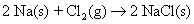
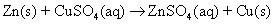
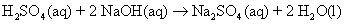
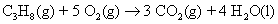

Several general types of chemicalreactions can occur based on what happens when going from reactants toproducts. The more common types of chemical reactions are as follows:
Combination
Decomposition
Single displacement
Double displacement
Combustion
Redox
In combination reactions, two or more reactants form one product. The reaction of sodium and chlorine to form sodium chloride,

and the burning of coal (carbon) to give carbon dioxide,

are examples of combination reactions.
Depending on conditions or the relative amounts of the reactants, more than one product can be formed in a combination reaction.
Decomposition reactions are really the opposite of combination reactions. In decomposition reactions, a single compound breaks down into two or more simpler substances (elements and/or compounds).
The decomposition of water into hydrogen and oxygen gases,

and the decomposition of hydrogen peroxide to form oxygen gas and water,

are examples of decomposition reactions.
In single displacement reactions, a more active elementdisplaces (kicks out) another less active element from a compound. Forexample, if you put a piece of zinc metal into a copper(II) sulfatesolution, the zinc displaces the copper, as shown in this equation:

The notation (aq) indicates that the compound is dissolved in water — in an aqueous solution. Because zinc replaces copper in this case, it’s said to bemore active. If you place a piece of copper in a zinc sulfate solution,nothing will happen.
The following table shows the activityseries of some common metals. Notice that because zinc is more active in the table, it will replace copper, just as the preceding equationshows.
| Metal | Al | Zn | Cr | Fe | Ni | Sn | Pb | Cu | Ag | Au |
|---|
In single displacement reactions, only one chemical species is displaced. In double displacement reactions, or metathesis reactions, two species (normally ions) are displaced. Most of the time, reactionsof this type occur in a solution, and either an insoluble solid(precipitation reactions) or water (neutralization reactions) will beformed.
If you mix a solution of potassium chloride and a solution of silvernitrate, a white insoluble solid is formed in the resulting solution.The formation of an insoluble solid in a solution is called precipitation.
Here is the molecular equation for this double-displacement reaction:

The white insoluble solid that’s formed is silver chloride.
The other type of double-displacement reaction is the reactionbetween an acid and a base. This double-displacement reaction, called a neutralization reaction, forms water. Take a look at the mixing solutions of sulfuric acid (auto battery acid) and sodium hydroxide (lye).
Here is the molecular equation for this reaction:

Combustion reactions occur when a compound, usually one containing carbon, combines with the oxygen gas in the air. This process is commonly called burning. Heat is the most-useful product of most combustion reactions.
Here’s the equation that represents the burning of propane:

Propane belongs to a class of compounds called hydrocarbons, compounds composed only of carbon and hydrogen. The product of this reaction is heat.
Combustion reactions are also a type of redox reaction.
Redox reactions, or reduction-oxidation reactions, are reactions in which electrons are exchanged:


The preceding reactions are examples ofother types of reactions (such as combination, combustion, andsingle-replacement reactions), but they’re all redox reactions. They all involve the transfer of electrons from one chemical species to another. Redox reactions are involved in combustion, rusting, photosynthesis,respiration, batteries, and more.